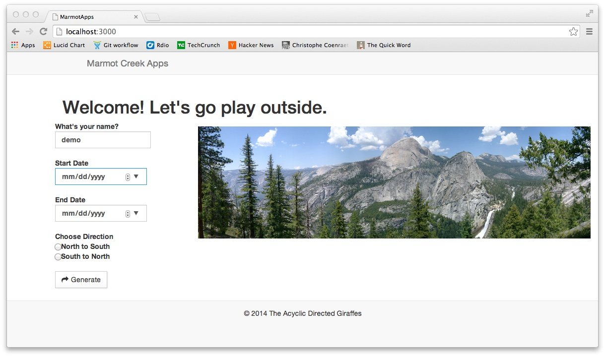
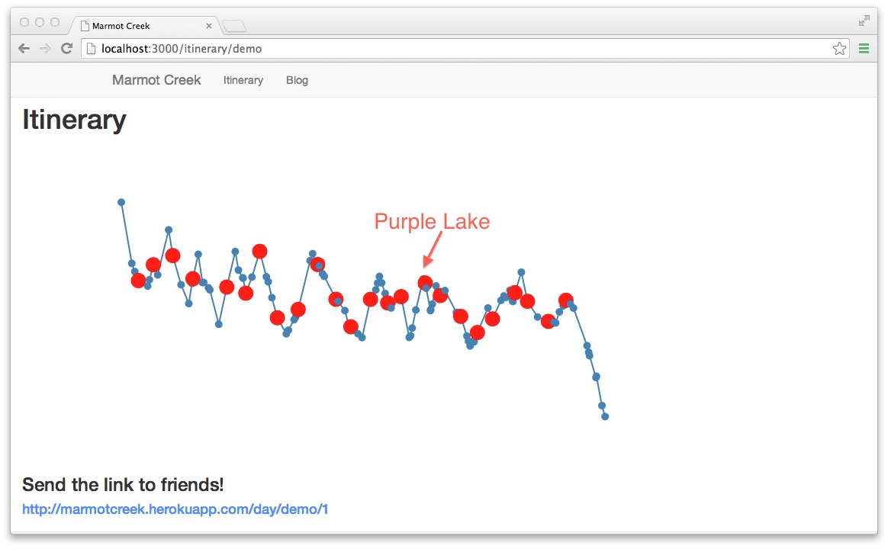
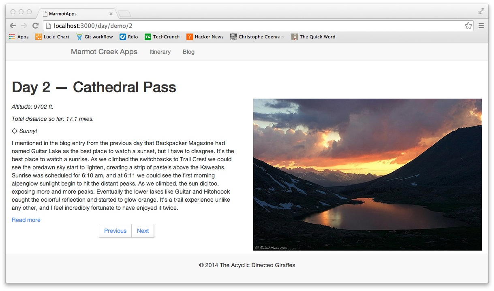
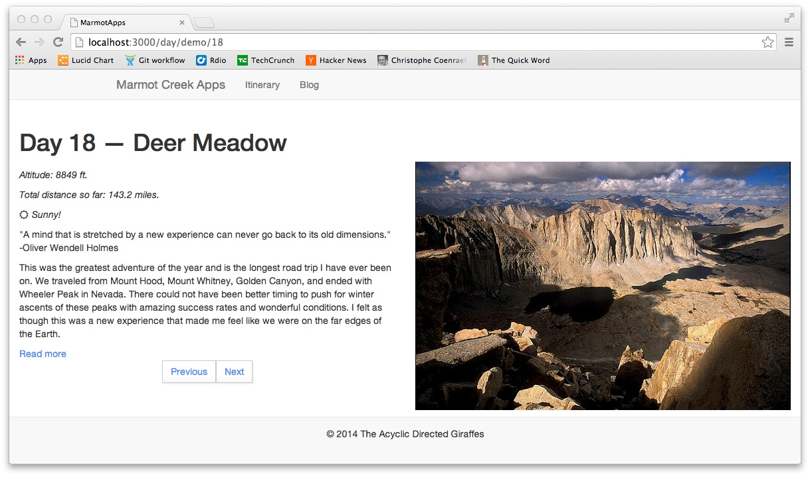

Kate Jenkins Mercado
Mechanical, inflammable, insufferable.


Home
Boing
Synesthesia
Marmot Creek
The Glass Banana
LASER
Tesselcopter
Hackathons
Travels
Marmot Creek
Marmot Creek Journaling provides a full daily blog for long-distance hikers of the John Muir Trail with minimal startup and zero ongoing effort. Make your family and friends feel included on your journey without needing internet connectivity on the trail.
This project was implemented by the Acyclic Directed Giraffes (Kate Jenkins, Lindsey Smith, Archana Balagondar) for the LAUNCH Hackathon in San Francisco, CA, Feb 21-23, 2014. The repo is on GitHub and the app is deployed on Heroku.
We started with the idea that all long-distance hikers have a problem with communication while they are disconnected. For the hiker, who often starts a journal or blog with the best of intentions only to post two enthusiastic entries and then tail off, this is a problem of recording. For their friends and family, it is a problem of feeling concerned. Marmot Creek Journaling attempts to solve both of these problems by creating a daily scrapbook-style pseudo-blog with automatically generated entries for a custom itinerary.
A new user shares the start and end dates for their trip and the app proposes roughly equidistant campsites for the ~2-3 week trip. That's it. The hiker goes on their trip, and friends and family can better imagine what their adventurer is experiencing.
 Eventual optimizations include a social component to help plan resupplies and the ability to upload video updates on civilization/layover days. On the itinerary page, a "share" button could allow input of a list of email addresses with whom the user wishes to share their personalized link. The D3 map could allow dragging to modify the itinerary after initial generation. Seasonally appropriate trip reports from the relevant section of the trail, selected writings from the exact area from the legendary nature writers, ranger reports, weather data, and so on. The campsite data could also be included in a Mongo collection instead of called as a JSON object.
We use a Node/Express server, render the itinerary dynamically with D3.js, back the user data with MongoDB, and template with Jade. The full stack was originally forked from the Hackathon Starter. You can see our original mockups here, here, and here.
{kind=link}
{kind=link}
{kind=link}